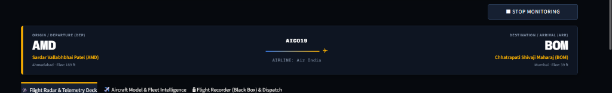
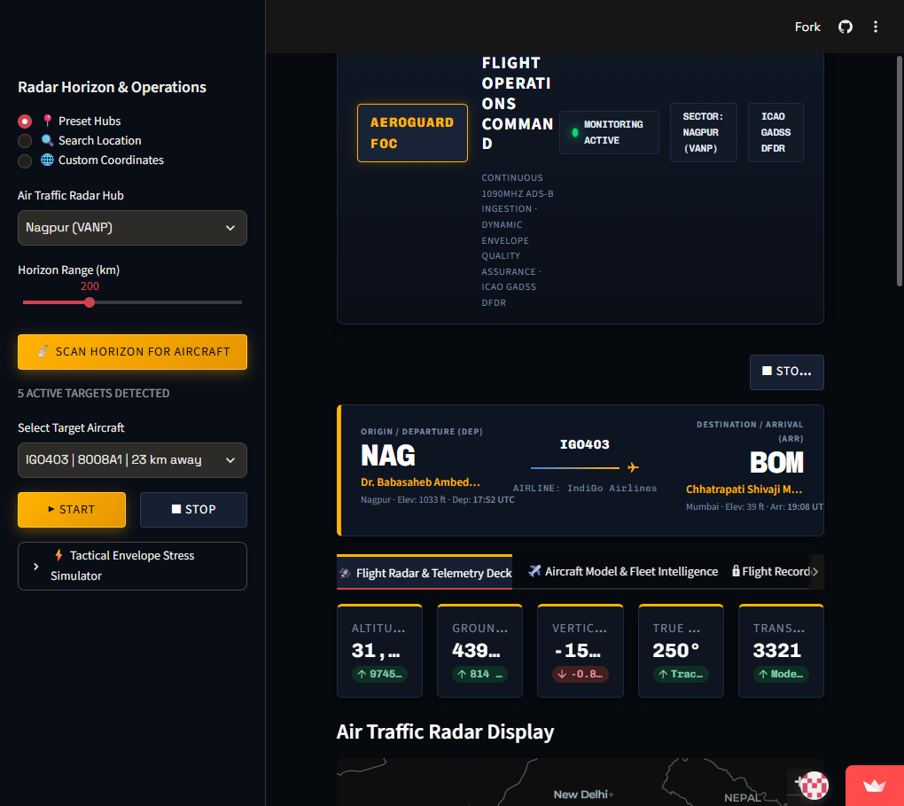
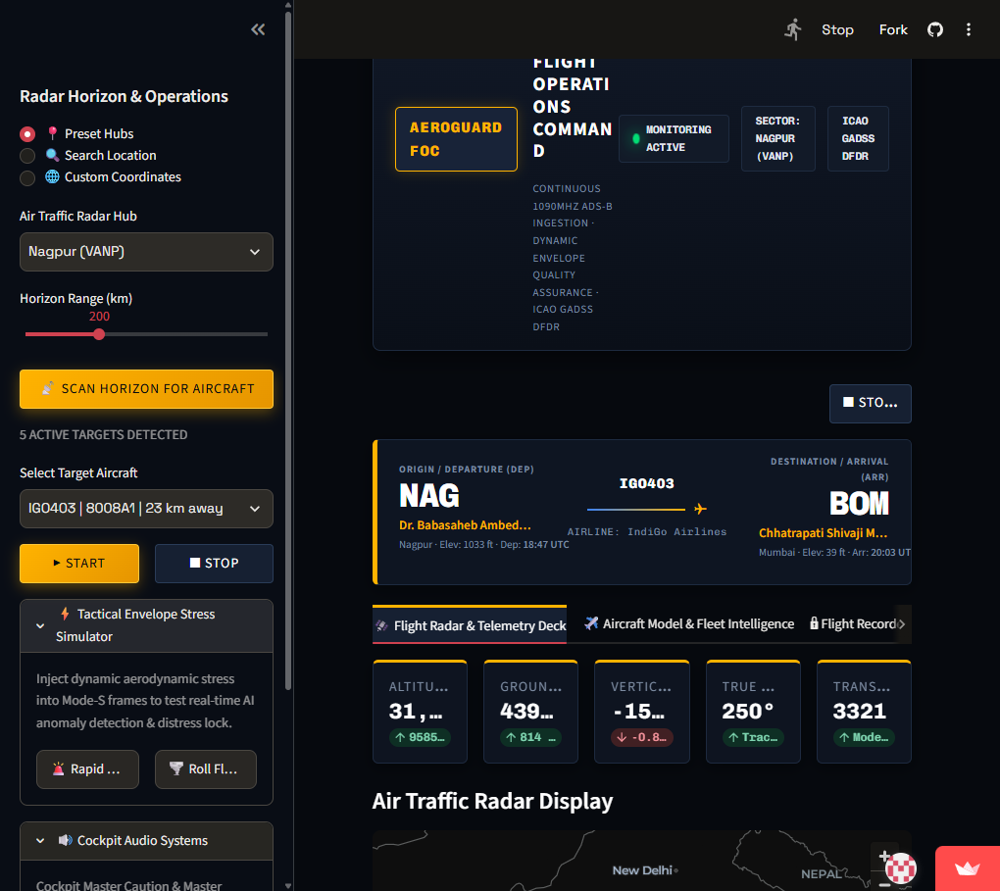

1. AeroGuard Avionics
Real-Time AI Flight Safety Intelligence & Anomaly Detection
ACTUAL MODEL SNIP
- Aviation Challenge: Traditional Air Traffic Control (ATC) radar displays raw positional points; controllers only know an aircraft is in trouble after an emergency develops.
- AeroGuard Solution: An intelligent avionics safety platform that ingests real-time Mode-S ADS-B telemetry, continuously assesses aerodynamic stability, and predicts distress before critical failure.
- Core Pipeline: 1 Hz live ADS-B ingestion -> 17 kinematic differential features -> Random Forest ML classifier -> Real-time XAI bounds -> ICAO Annex 13 black box filing.
- Production Architecture: Streamlit frontend, PyDeck 3D radar map, Vega-Lite kinematics traces, and cryptographic SHA-256 evidence sealing.
🎤 Viva / Interview Defense Script
"AeroGuard transforms standard radar monitoring from passive observation into proactive, real-time safety intervention using machine learning."
2. Electronic Flight Progress Strip (EFS)
Live Dynamic Route Tracking & Zulu Schedule Computation
ACTUAL MODEL SNIP

- Origin & Destination Aerodromes: Sardar Vallabhbhai Patel (AMD, Elev: 189 ft) to Chhatrapati Shivaji Maharaj (BOM, Elev: 39 ft).
- Barometric Altimeter Physics: Airport elevations dictate the QNH barometric pressure sub-scale calibration required for safe approach and touchdown.
- Zulu Time Standard: International aviation strictly operates on UTC (Zulu time) to prevent time desynchronization across cross-border flight corridors (Dep: 09:15 UTC, Arr: 10:20 UTC).
- Dynamic Airway Vector: Flight AIC019 (Air India) position progress is tracked continuously along the great-circle airway corridor using the spherical Haversine formula.
🎤 Viva / Interview Defense Script
"Electronic flight strips in modern Eurocat/TopSky towers replace paper strips with dynamic telemetry, showing arrival ETAs and elevation benchmarks in real time."
3. Primary Flight Instruments HUD
5-Card Avionics Telemetry Deck & Physical Significance
ACTUAL MODEL SNIP
- Altitude (MSL) - 31,998 ft: Flying at Flight Level 320 (FL320) calibrated to the 1013.25 hPa standard atmospheric pressure plane.
- Ground Speed - 439 kts: High subsonic cruise speed (~813 km/h, Mach 0.78), tracking ground velocity over the Earth's surface via Mode-S Doppler radar.
- Vertical Speed - -157 fpm: Indicates aerodynamic cruise equilibrium (Lift = Weight); within normal atmospheric ±200 fpm autopilot oscillation.
- Magnetic Heading - 250°: West-Southwest assigned track vector guiding the aircraft from Ahmedabad into the Mumbai FIR approach corridor.
- Squawk Code - 3321: Mode-3A discrete radar identifier assigned by Mumbai ATC; automatic trip-wire triggers instant red alert on emergency 7700 squawks.
🎤 Viva / Interview Defense Script
"These five HUD metrics represent the aircraft's instantaneous 6-DOF state vector. Our feature engineering pipeline transforms these raw inputs into high-order derivatives."
4. Flight Envelope Stability Index
Kinematic Health Formulation & 0.42 Calibrated Boundary
ACTUAL MODEL SNIP
- Stability Index (56.7%): Formulated as 100 * (1 - P(Distress)) * (1 - JitterPenalty). The score accounts for sensor noise and mild atmospheric chop at FL320.
- Why 0.42 Decision Threshold: In standard ML, 0.50 is the cutoff. In aerospace safety, missing a crash (False Negative) is unacceptable.
- Cost-Sensitive Optimization: Lowering the anomaly threshold to 0.42 maximizes Distress Recall (71.5%) while keeping false alerts bounded.
- Excursion Counter: Real-time counter tracking continuous out-of-envelope frames, preventing transient sensor glitches from sounding false alarms.
🎤 Viva / Interview Defense Script
"We intentionally rejected the naive 0.50 decision boundary. In safety-critical aviation, missing an upset is catastrophic, so we tuned the boundary to 0.42 for high recall."
5. Explainable AI (XAI) Attributions
Four SHAP-Inspired Real-Time Kinematic Envelope Cards
ACTUAL MODEL SNIP
- Vertical Dynamics (dz/dt): -157 fpm (Nominal: ±500 fpm). Detects aerodynamic stalls, mountain wave downdrafts, and uncommanded dives.
- Kinetic Energy (dv/dt): 0.12 kt/s (Nominal: ±0.5 kt/s). Measures longitudinal aircraft acceleration to identify engine thrust asymmetry or flameout.
- Lateral Yaw Track (σ_θ): 1.4° (Nominal: <2.5°). Rolling heading standard deviation; high jitter exposes Dutch Roll instability or severe windshear.
- Barometric Envelope (Δz): 142 ft (Nominal: <300 ft). Strictly adheres to ICAO RVSM (Reduced Vertical Separation Minimum) 300 ft corridor bounds.
🎤 Viva / Interview Defense Script
"Instead of presenting a black-box probability, AeroGuard decomposes risk into 4 physical dimensions so air traffic controllers instantly understand why an alert fired."
6. 3D Air Traffic Radar Display
Corridor Waypoint Tracking, Range Rings & Heading Vector
ACTUAL MODEL SNIP

- Cyan Airway Corridor: Displays the active ICAO high-altitude RNAV airway corridor between departure and arrival terminal control areas.
- Concentric Range Rings (25 km & 50 km): Ground-referenced distance circles centered on the aircraft fix, providing instant horizontal separation visual scale.
- Golden Velocity Leader: 3-minute forward dead-reckoning vector computed from ground speed and magnetic track: Lat_{t+3} = Lat_0 + (v*t*cosθ)/R.
- Situational Awareness: If the golden vector drifts off the cyan airway centerline, the radar controller spots navigation drift minutes before conflict.
🎤 Viva / Interview Defense Script
"The 3-minute heading vector leader projects the future trajectory of the aircraft, enabling controllers to resolve airspace separation conflicts well before they manifest."
7. Dynamic Kinematics Trajectory Curves
Real-Time 120-Second Vega-Lite Sliding Window Profiles
ACTUAL MODEL SNIP
- Temporal Altitude Profile: Displays a rolling 120-second history of barometric altitude, clearly distinguishing between level cruise, climb, and rapid descents.
- Kinetic Ground Speed Curve: Monitors auto-throttle velocity hold; sudden steep decelerations highlight high-altitude aerodynamic stall risks.
- Vertical Rate Kinematics: Visualizes instantaneous vertical velocity derivatives; high-frequency oscillations reflect atmospheric turbulence damping by the autopilot.
- Time-Series Memory: Enables ground operations to visualize the precise physical evolution leading up to any stability index excursion.
🎤 Viva / Interview Defense Script
"Static points hide trends. Our Vega-Lite sliding curves provide the temporal derivatives necessary to detect dynamic instability such as phugoid oscillations."
8. Machine Learning Model Architecture
Random Forest Ensemble & 17 Kinematic Feature Pipeline
ACTUAL MODEL SNIP
- Model Selection: Random Forest with 100 bagged decision trees, chosen over deep networks for sub-2ms inference speed and deterministic explainability.
- GroupShuffleSplit Validation: Split grouped strictly by individual Flight ID to prevent temporal data leakage between consecutive frames of the same flight.
- 17 Engineered Features: Positional (alt, speed, track), 3-second first derivatives (Δz, Δv, Δθ), 5-point rolling statistics (means & variances), and kinetic energy proxies (0.5*v^2, gz + 0.5*v^2).
- Model Benchmark: 77.4% overall test accuracy, 71.5% distress event recall, with zero latency lag during live 1 Hz ADS-B data streaming.
🎤 Viva / Interview Defense Script
"We engineered physics-based features like specific mechanical energy and acceleration derivatives rather than feeding raw coordinates, giving the model true aerodynamic sensitivity."
9. Aircraft Model & Fleet Intelligence
OEM Specifications & Aerodynamic Constraints (Tab 2)
ACTUAL MODEL SNIP
- Airframe Identification: Airbus A320-200 / A320ceo, manufactured by Airbus S.A.S., ICAO Type Code A320.
- Wake Turbulence Category (MEDIUM): Under ICAO Doc 8643, enforces mandatory 3-5 nautical mile separation behind the aircraft to protect trailing flights from wingtip vortices.
- Maximum Takeoff Weight (MTOW - 78,000 kg): Structural mass limit governing aerodynamic lift generation (L = MTOW * g = 0.5 * ρ * v^2 * S * C_L).
- Operational Ceiling (FL390 - 39,000 ft): Cruising at FL320 leaves a 7,000 ft buffer below the aerodynamic coffin corner.
- Powerplant: Dual CFM International CFM56-5B4 high-bypass turbofans generating 27,000 lbf of thrust each.
🎤 Viva / Interview Defense Script
"Tab 2 links live transponder hex codes to certified OEM specs, allowing AeroGuard to tailor envelope boundaries to the exact airframe being monitored."
10. DFDR Black Box & Incident Dossier
ICAO Annex 13 Air Safety Reporting & SHA-256 Integrity (Tab 3)
ACTUAL MODEL SNIP

- ICAO Annex 13 Mandate: Formatted to international standards for preliminary accident/incident submission to bodies like DGCA, AAIB, and NTSB.
- 45-Minute In-Memory DFDR Buffer: Rolling black-box cache adhering to ICAO GADSS (Doc 10054) autonomous distress tracking mandates.
- Cryptographic Evidence Integrity: SHA-256 hash digests generated over raw telemetry frames to guarantee tamper-proof legal chain of custody.
- Multi-Format Export: Includes instant Markdown incident file download and print-ready vectorized PDF generation for air safety boards.
🎤 Viva / Interview Defense Script
"AeroGuard doesn't just sound an alarm; it automatically compiles an ICAO Annex 13 compliant incident dossier sealed with SHA-256 cryptography for immediate dispatch."